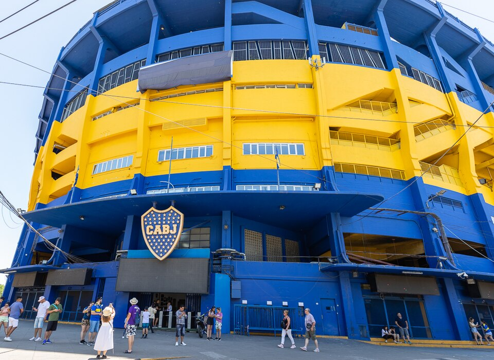
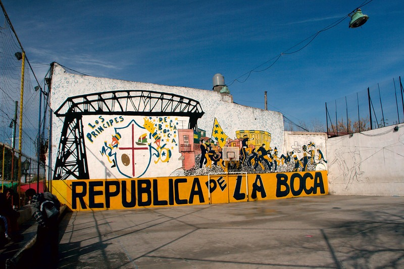
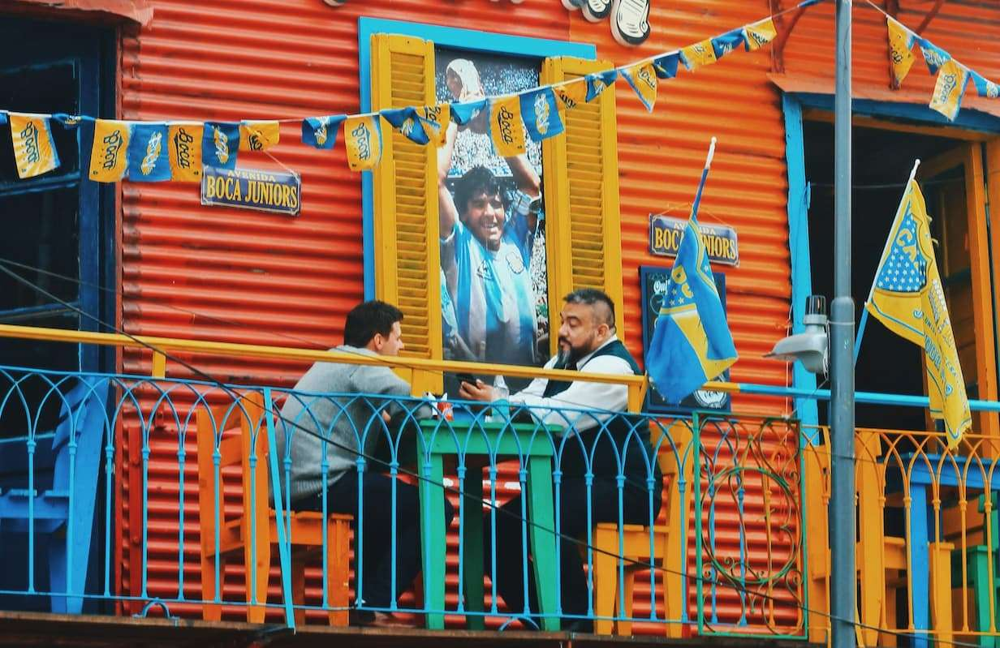
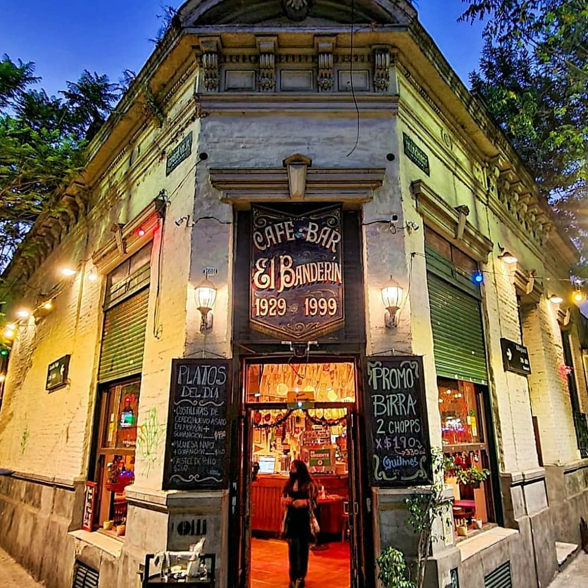

Cuándo ir
Preferí las horas de luz para las caminatas. Antes de salir, consultá los horarios oficiales de cada espacio y la programación del día.
FÚTBOL · PASIÓN, BARRIO Y TRIBUNA
De potreros míticos y clubes sociales a estadios de cemento que laten. Un recorrido cultural y urbano por el idioma universal de los porteños.
Empezar a recorrer
Antes de salir
Este recorrido reúne espacios sagrados de la liturgia futbolera porteña. Prestá atención a las veredas fileteadas, los adoquines antiguos de La Boca y el sonido distante de los entrenamientos de barrio.


Brandsen 805, La Boca
El estadio de Boca Juniors es una referencia del paisaje de La Boca. Observá su forma y su vínculo con las calles y viviendas que lo rodean.
Experiencia: Observación exterior y fotografías de la fachada.
Duración: 30 minutos en el exterior
Horarios: Recorrido exterior de día. Consultá al club para actividades interiores.
Acceso: Exterior libre. Ingreso sujeto a actividades y entradas del club; no incluye acceso a partidos.
Av. Figueroa Alcorta 7597, Núñez
El estadio de River Plate es uno de los más grandes de Sudamérica. Su fachada y su entorno en Núñez invitan a recorrer un espacio que trasciende lo deportivo y forma parte del paisaje urbano.
Experiencia: Recorrido exterior, fotografías y observación de la explanada.
Duración: 40 minutos en el exterior
Horarios: Recorrido exterior de día. Consultá al club para visitas guiadas.
Acceso: Exterior libre. Ingreso al museo y visitas guiadas con entrada; consultá disponibilidad.
Guardia Vieja 3601, Almagro
Este café reúne banderines de distintos equipos. La colección invita a reconocer al fútbol como una cultura compartida que también se conversa alrededor de una mesa.
Experiencia: Pausa gastronómica y observación de la colección.
Duración: 45 minutos estimados
Horarios: Consultar atención antes de viajar; no se garantiza transmisión de partidos.
Acceso: Consumo a cargo del visitante. Se llega en transporte público desde Núñez.

Preferí las horas de luz para las caminatas. Antes de salir, consultá los horarios oficiales de cada espacio y la programación del día.
Subte, colectivo y caminata. Combiná los tramos según tu ritmo y llevá tu tarjeta SUBE para los traslados.
Calzado cómodo, botella de agua y espacio para la sorpresa. Respetá las obras, los vecinos y los espacios que visites.